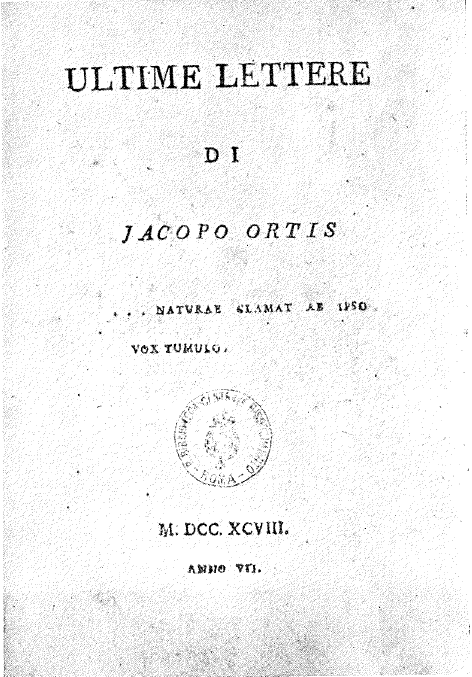
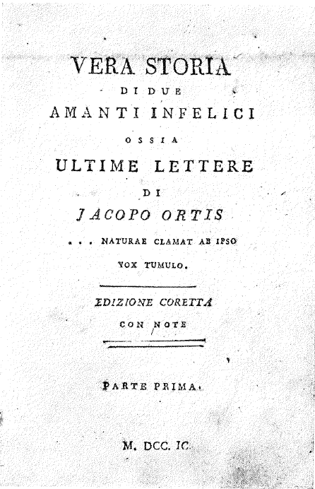
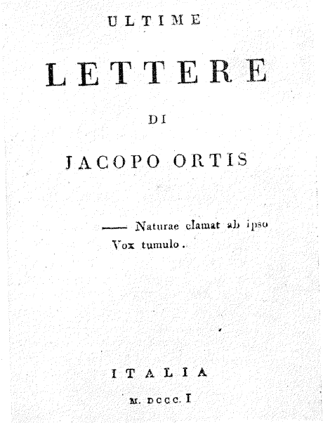
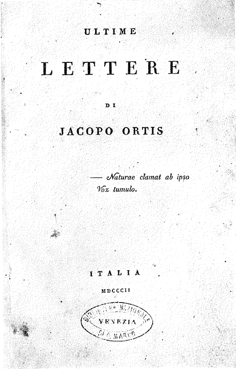
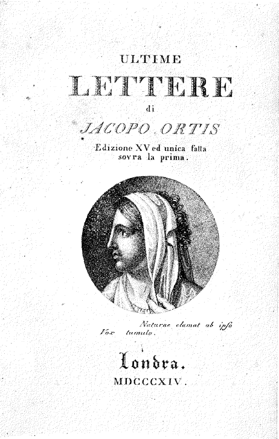
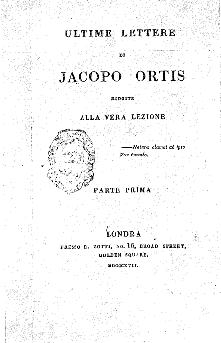

The editorial history of The Last Letters of Jacopo Ortis
runs parallel to the life of its author, Ugo Foscolo.
Tracing and comparing the different versions of the work helps us
understand Foscolo’s editorial choices, which reflect the evolution
of his personal experiences and circumstances.
Explore the different stages of the work, from unpublished drafts
to published editions, including both authorised and unauthorised versions.
Drafts and Editions
Select an edition to learn more about its textual and editorial history or explore the editions and their variants.

Bolognese Draft, 1798
The edition of an authorial draft that was never published; later modified by Angelo Sassoli.

Vera Storia di Due Amanti Infelici ossia Le Ultime Lettere di Jacopo Ortis, 1799
The first published edition of the work, not approved by Ugo Foscolo, with Angelo Sassoli's additions.

Goethe's Draft, Milan, 1801
The only surviving copy of this unpublished edition, which was gifted to Goethe.

Ultime Lettere di Jacopo Ortis, Genio Tipografico, Milan, 1802
The editio princeps, the first published edition of the work formally approved by Ugo Foscolo.

Ultime Lettere di Jacopo Ortis, Orell and Füssli, Zurich, 1816
The second published edition of the work, printed in Zurich but bearing 'London' on the frontispiece for censorship reasons.

Ultime Lettere di Jacopo Ortis, John Murray, London, 1817
The last published edition of the work before the author's death, issued in London.